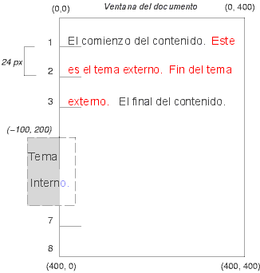

Aquí hay otra ilustración que muestra lo que sucede cuando un flotante se superpone con los bordes de elementos en el flujo normal.

Una imagen flotante oculta los bordes de las cajas de bloque con los que se superpone.
Contenidos
Este capítulo y el siguiente describen el modelo de formato visual: cómo las aplicaciones del usuario procesan la estructura del documento para los medios visuales.
En este modelo de formato visual, cada elemento en la estructura del documento genera cero o más cajas de acuerdo al modelo de caja. La composición de estas cajas se gobierna por:
Las propiedades definidas en este capítulo y el siguiente se aplican a los medios contínuos y a los medios paginados. Sin embargo, el significado de las propiedades del margen varía cuando son aplicadas a los medios paginados (ver el modelo de página para más detalles).
El modelo de formato visual no especifica todos los aspectos del formato (ej., no especifica un algoritmo para el espaciado entre letras). Las aplicaciones del usuario con conformidad pueden tener distintos comportamientos con aquellos formatos de composición no cubiertos por esta especificación.
Las aplicaciones del usuario para los medios contínuos generalmente ofrecen a los usuarios un acceso visual (una ventana u otra área de visión en la pantalla) a través del cual los usuarios consultan un documento. Las aplicaciones del usuario pueden cambiar la composición del documento cuando el acceso visual es redimensionado (ver el bloque de contención inicial). Cuando el acceso visual es más pequeño que el bloque de contención inicial de un documento, la aplicación del usuario debe ofrecer un mecanismo de desplazamiento. A lo sumo hay un acceso visual por lienzo, pero las aplicaciones del usuario pueden procesar más de un lienzo (ej., proporcionar diferentes vistas del mismo documento).
En CSS2, muchas posiciones y tamaños de cajas son calculados con respecto a los límites de una caja rectangular llamada bloque de contención. En general, las cajas generadas actúan como bloques de contención para las cajas descendientes; decimos que una caja "establece" el bloque de contención para sus descendientes. La frase "el bloque de contención de la caja" significa "el bloque de contención en el cuál la caja existe", no aquella que genera.
Cada caja tiene una posición dada con respecto a su bloque de contención, pero no está confinada a este bloque de contención; lo puede desbordar.
La raíz de la estructura del documento genera una caja que sirve de bloque de contención inicial para la composición subsecuente.
El ancho del bloque de contención inicial puede ser especificado con la propiedad 'width' del elemento raíz. Si esta propiedad tiene el valor 'auto', la aplicación del usuario provee el ancho inicial (ej., la aplicación del usuario utiliza el ancho actual del acceso visual).
La altura del bloque de contención inicial puede ser especificada con la propiedad 'height' del elemento raíz. Si esta propiedad tiene el valor 'auto', la altura del bloque de contención aumentará para acomodar el contenido del documento.
El bloque de contención inicial no puede ser posicionado o flotar (es decir, las aplicaciones del usuario ignoran las propiedades 'position' y 'float' para el elemento raíz).
Los detalles del modo en que las dimensiones de un bloque de contención son calculadas se describen en el capítulo siguiente.
Las siguientes secciones describen los tipos de cajas que pueden ser generadas en CSS2. Un tipo de caja afecta, en parte, su comportamiento en el modelo de formato visual. La propiedad 'display', descripta abajo, especifica un tipo de caja.
Los elementos a nivel de bloque son aquellos elementos del documento fuente que son tratados visualmente como bloques (ej., párrafos). Algunos valores de la propiedad 'display' conforman un elemento a nivel de bloque: 'block', 'list-item', 'compact' y 'run-in' (algunas veces; ver compact boxes y run-in boxes), y 'tabla'.
Los elementos a nivel de bloque generan una caja de bloque principal que sólo contiene cajas de bloque. La caja de bloque principal establece el bloque de contención para las cajas descendientes y el contenido generado y es también la caja involucrada en cada esquema de posicionamiento. Las cajas de bloque principales participan de un contexto de formato de bloque.
Algunos elementos a nivel de bloque generan cajas adicionales fuera de la caja principal: los elementos 'list-item' y aquellos con marcadores. Estas cajas adicionales son situadas con respecto a la caja principal.
En un documento como éste:
<DIV> Un texto <P>Más texto </DIV>(y asumiendo que DIV y P tienen ambos 'display: block'), DIV parece tener un contenido de línea y un contenido de bloque. Para facilitar el formato, asumimos que existe una caja de bloque anónima alrededor de "Un texto".
Diagrama mostrando las tres cajas, una de las cuales es anónima, para el ejemplo de arriba.
En otras palabras: si la caja de bloque (como las generadas por DIV, arriba) tiene otra caja de bloque en su interior (como la de P, arriba), entonces la forzamos a contener sólo cajas de bloque en su interior, envolviendo a las cajas de línea en una caja de bloque anónima.
Este modelo se aplicaría en el próximo ejemplo si las siguientes reglas:
/* Nota: las AU HTML pueden no respetar estas reglas */
BODY { display: inline }
P { display: block }
fueran usadas con este documento HTML:
<!DOCTYPE HTML PUBLIC "-//W3C//DTD HTML 4.0 Transitional//EN"> <HEAD> <TITLE>Texto anónimo interrumpido por un bloque</TITLE> </HEAD> <BODY> Este es el texto anónimo antes de P. <P>Este es el contenido de P.</P> Este es el texto anónimo después de P. </BODY>
El elemento BODY contiene un segmento (C1) de texto anónimo seguido por un elemento a nivel de bloque seguido por otro segmento (C2) de texto anónimo. Las cajas resultantes serían una caja de bloque anónima para BODY, conteniendo una caja de bloque anónima alrededor de C1, la caja de bloque para P y otra caja de bloque anónima alrededor de C2.
Las propiedades de las cajas anónimas son heredadas de las cajas no-anónimas que las encierran (en el ejemplo: la de DIV). Las propiedades no heredadas tiene su valor inicial. Por ejemplo, la fuente de la caja anónima es heredada de DIV, pero los márgenes serán igual a 0.
Los elementos a nivel de línea son aquellos elementos del documento fuente que no forman nuevos bloques de contenido; el contenido es distribuido en líneas (ej., fragmentos de texto enfatizado dentro de un párrafo, imágenes en línea, etc.). Algunos valores de la propiedad 'display' conforman un elemento de línea: 'inline', 'inline-table', 'compact' y 'run-in' (algunas veces; ver cajas compact y run-in). Los elementos a nivel de línea generan cajas de línea.
Las cajas de línea pueden participar de varios contextos de formato:
En un documento como éste:
<P>Algún <EM>texto</em> enfatizado</P>
P genera una caja de bloque, con algunas cajas de línea dentro de ella. La caja para "texto" en una caja de línea generada por un elemento de línea (EM), pero las otras cajas ("Algún" y "enfatizado") son cajas de línea generadas por un elemento a nivel de bloque (P). Los últimos son denominados cajas de línea anónimas porque no tienen un elemento a nivel de línea asociado.
Tales cajas de línea anónimas heredan las propiedades hereditarias de su caja de bloque padre. Las propiedades no hereditarias tienen su valor inicial. En el ejemplo, el color de las cajas de línea anónimas es heredado de P, pero el fondo es transparente.
Si queda claro en el contexto a qué tipo de caja anónima se refiere, las cajas de línea anónimas y las cajas de bloque anónimas son denominadas simplemente cajas anónimas en esta especificación.
Existen otros tipos de cajas anónimas que surgen en el formato de las tablas.
Una caja compact se comporta del siguiente modo:
La caja compact se da en una posición en el margen como sigue: está fuera (a la izquierda o a la derecha) de la primer caja de línea del bloque, pero afecta el cálculo de la altura de la caja de línea. La propiedad 'vertical-align' de la caja compact determina la posición vertical de la caja compact con relación a esa caja de línea. La posición horizontal de la caja compact es siempre en el margen de la caja de bloque.
Un elemento que no puede ser compuesto en una línea no puede ser colocado en el margen del bloque siguiente. Por ejemplo, un elemento 'compact' en HTML que contiene un elemento BR siempre será compuesto como una caja de bloque (asumiendo el estilo predeterminado de BR, que inserta una nueva línea). Para posicionar textos formados por varias líneas en el margen, la propiedad 'float' es a menudo más conveniente.
El siguiente ejemplo ilustra una caja compact.
<!DOCTYPE HTML PUBLIC "-//W3C//DTD HTML 4.0//EN">
<HTML>
<HEAD>
<TITLE>Un ejemplo de caja compact</TITLE>
<STYLE type="text/css">
DT { display: compact }
DD { margin-left: 4em }
</STYLE>
</HEAD>
<BODY>
<DL>
<DT>corta
<DD><P>La descripción va aquí.
<DT>demasiado larga para el margen
<DD><P>La descripción va aquí.
</DL>
</BODY>
</HTML>
Este ejemplo podría estructurarse como:
corta La descripción va aquí.
demasiado larga para el margen
La descripción va aquí.
La propiedad 'text-align' puede ser usada para alinear los elementos compact dentro del margen: contra el borde izquierdo del margen ('left'), contra el borde derecho ('right') o centrado en el margen ('center'). El valor 'justify' no se aplica y es considerado como 'left' o 'right', dependiendo de la 'dirección' del elemento a nivel de bloque entre cuyos márgenes el elemento compact es procesado. ('left' si la dirección es 'ltr', 'right' si es 'rtl'.)
Por favor consulte la sección sobre contenido generado por información acerca de cómo las cajas compact interactúan con el contenido generado.
Una caja run-in box se comporta del siguiente modo:
Una caja 'run-in' es útil para los encabezados run-in, como en este ejemplo:
<!DOCTYPE HTML PUBLIC "-//W3C//DTD HTML 4.0//EN">
<HTML>
<HEAD>
<TITLE>Un ejemplo de caja run-in</TITLE>
<STYLE type="text/css">
H3 { display: run-in }
</STYLE>
</HEAD>
<BODY>
<H3>Un encabezado run-in.</H3>
<P>Y un párrafo de texto que lo sigue.
</BODY>
</HTML>
Este ejemplo podría ser procesado como:
Un encabezado run-in. Y un párrafo de texto que lo sigue.
Las propiedades del elemento run-in son heredados de su padre en la estructura del documento, no de la caja de bloque de la cual visualmente se vuelve parte.
Por favor consulte la sección sobre contenido generado por información acerca de cómo las cajas run-in interactúan con el contenido generado.
| Valor: | inline | block | list-item | run-in | compact | marker | table | inline-table | table-row-group | table-header-group | table-footer-group | table-row | table-column-group | table-column | table-cell | table-caption | none | inherit |
| Inicial: | inline |
| Se aplica a: | todos los elementos |
| Se hereda: | no |
| Porcentajes: | N/A |
| Medios: | todos |
Los valores de esta propiedad tienen los siguientes significados:
Por favor observe que un valor 'none' para display no crea una caja invisible; no crea ninguna caja en absoluto. CSS incluye mecanismos que permiten que un elemento genere cajas en la estructura del formato que afecten la composición pero que ellas mismas sean invisibles. Por favor consulte la sección sobre visibilidad para más detalles.
Observe que aunque el valor inicial de 'display' es 'inline', las reglas de la hoja de estilo predeterminada de la aplicación del usuario puede sustituir este valor. Ver la hoja de estilo de ejemplo para HTML 4.0 en el apéndice.
Aquí hay algunos ejemplos de la propiedad 'display':
P { display: block }
EM { display: inline }
LI { display: list-item }
IMG { display: none } /* No muestra las imágenes */
Las aplicaciones del usuario HTML con conformidad pueden ignorar la propiedad 'display'.
En CSS2, una caja puede situarse según tres esquemas de posicionamiento:
Las propiedades 'position' y 'float' determinan qué algoritmo de posicionamiento CSS2 se usa para calcular la posición de una caja.
| Valor: | static | relative | absolute | fixed | inherit |
| Inicial: | static |
| Se aplica a: | todos los elementos, pero no al contenido generado |
| Se hereda: | no |
| Porcentajes: | N/A |
| Medios: | visuales |
Los valores de esta propiedad tiene los siguientes significados:
@media screen {
H1#first { position: fixed }
}
@media print {
H1#first { position: static }
}
Se dice que un elemento está posicionado si su propiedad 'position' tiene un valor distinto a 'static'. Los elementos posicionados generan cajas posicionadas, situadas de acuerdo a cuatro propiedades:
| Valor: | <medida> | <porcentaje> | auto | inherit |
| Inicial: | auto |
| Se aplica a: | los elementos posicionados |
| Se hereda: | no |
| Porcentajes: | referidos a la altura del bloque de contención |
| Medios: | visuales |
Esta propiedad especifica cuán lejos se desplaza el margen superior del contenido de la caja por debajo del borde superior del bloque de contención de la caja.
| Valor: | <medida> | <porcentaje> | auto | inherit |
| Inicial: | auto |
| Se aplica a: | los elementos posicionados |
| Se hereda: | no |
| Porcentajes: | referidos al ancho del bloque de contención |
| Medios: | visuales |
Esta propiedad especifica cuán lejos se desplaza el margen derecho del contenido de la caja hacia la izquierda del borde derecho del bloque de contención de la caja.
| Valor: | <medida> | <porcentaje> | auto | inherit |
| Inicial: | auto |
| Se aplica a: | los elementos posicionados |
| Se hereda: | no |
| Porcentajes: | referidos a la altura del bloque de contención |
| Medios: | visuales |
Esta propiedad especifica cuán lejos es desplazado el margen inferior del contenido de la caja por sobre la base del bloque de contención de la caja.
| Valor: | <medida> | <porcentaje> | auto | inherit |
| Inicial: | auto |
| Se aplica a: | los elementos posicionados |
| Se hereda: | no |
| Porcentajes: | referidos al ancho del bloque de contención |
| Medios: | visuales |
Esta propiedad especifica cuán lejos se desplaza el margen izquierdo del contenido de la caja hacia la derecha del borde izquierdo del bloque de contención de la caja.
Los valores para las cuatro propiedades tienen los siguientes significados:
Para las cajas posicionadas absolutamente, el desplazamiento es con respecto al bloque de contención de la caja. Para las cajas posicionadas relativamente, el desplazamiento es con respecto al borde externo de la propia caja (es decir, a la caja se le da una posición dentro del flujo normal, entonces se desplaza de esa posición de acuerdo a estas propiedades).
Las cajas dentro del flujo normal pertenecen al contexto del formato, que puede ser de bloque o de línea, pero no ambos simultáneamente. Las cajas de bloque participan de un contexto de formato de bloque. Las cajas de línea participan en un contexto de formato de línea.
En un contexto de formato de bloque, las cajas se colocan una después de otra, verticalmente, comenzando desde lo alto de un bloque de contención. La distancia vertical entre dos cajas hermanas es determinada por las propiedades 'margin'. Los márgenes verticales entre cajas de bloque adyacentes en un contexto de formato de bloque se cierran.
En un contexto de formato de bloque, cada borde izquierdo externo de la caja toca el borde izquierdo del bloque de contención (para la composición de derecha a izquierda, los bordes derechos se tocan). Esto es así aún en presencia de flotantes (aunque el área del contenido de una caja puede encogerse debido a los flotantes)
Para información acerca de los saltos de página en los medios paginados, por favor consulte la sección sobre saltos de página permitidos.
En un contexto de formato de línea, las cajas son colocadas horizontalmente, una después de otra, comenzando desde lo alto de un bloque de contención. Los márgenes horizontales, bordes y relleno son respetados entre estas cajas. Las cajas puede ser alineadas verticalmente de maneras diferentes: pueden alinearse por su parte superior o inferior, o por las líneas de base del texto en su interior. El área rectangular que contiene las cajas que forman una línea es llamada una caja de línea.
El ancho de una caja de línea es determinado por un bloque de contención. La altura de una caja de línea es determinada por las reglas establecidas en la sección sobre cálculo de la altura de la línea. Una caja de línea es siempre suficientemente alta para todas las cajas que contiene. Sin embargo, puede ser mayor que la caja más alta que contiene (si, por ejemplo, las cajas son alineadas de manera que sus líneas de base queden en línea). Cuando la altura de una caja B es menor que la altura de la caja de línea que la contiene, la alineación vertical de B dentro de la caja de línea es determinada por la propiedad 'vertical-align'.
Cuando varias cajas de línea no pueden ajustarse horizontalmente dentro de una sola caja de línea, son distribuidas entre dos o más cajas de línea apiladas verticalmente. De este modo, un párrafo es una pila vertical de cajas de líneas. Las cajas de línea son apiladas sin ninguna separación vertical y nunca se superponen.
En general, el borde izquierdo de una caja de línea toca el borde izquierdo de su bloque de contención y el borde derecho toca el borde derecho de su bloque de contención. Sin embargo, las cajas flotantes pueden interponerse entre el borde del bloque de contención y el borde de la caja de línea. Así, aunque las cajas de línea en el mismo contexto de formato de línea generalmente tienen igual ancho (el del bloque de contención), pueden variar en su ancho si el espacio horizontal disponible es reducido por los flotantes. Las cajas de línea en el mismo contexto de formato de línea generalmente varían en altura (ej., una línea podría contener una imagen muy alta mientras que las otras contienen sólo texto).
Cuando el ancho total de las cajas de línea en una línea es menor que el ancho de la caja de línea que las contiene, su distribución horizontal dentro de la caja de línea es determinada por la propiedad 'text-align'. Si esa propiedad tiene el valor 'justify', la aplicación del usuario puede estirar también las cajas de línea.
Puesto que una caja de línea no puede exceder el ancho de una caja de línea, las cajas de línea largas son divididas en varias cajas y éstas distribuidas en varias cajas de línea. Cuando una caja de línea es dividida, los márgenes, bordes y relleno no tienen ningún efecto visual donde se produce la división. El formato de los márgenes, bordes y relleno puede no ser completamente definido si la división se produce dentro de una incrustación bidireccional.
Las cajas de línea pueden también dividirse en varias cajas dentro de la misma caja de línea debido al procesamiento del texto bidirecional.
Aquí hay un ejemplo de construcción de una caja de línea. El siguiente párrafo (creado por el elemento HTML a nivel de bloque P) contiene texto anónimo mezclado con los elementos EM y STRONG:
<P>Algunas <EM>palabras con énfasis</EM> aparecen <STRONG>en esta</STRONG> oración, querida.</P>
El elemento P genera una caja de bloque que contiene cinco cajas de línea, tres de las cuáles son anónimas:
Para dar formato al párrafo, la aplicación del usuario fluye las cinco cajas dentro de cajas de línea. En este ejemplo, la caja generada por el elemento P establece el bloque de contención para las cajas de línea. Si el bloque de contención es suficientemente ancho, todas las cajas de línea encajarán en una sola caja de línea:
Algunas palabras con énfasis aparecen en esta oración, querida.
Si no, las cajas de línea serán divididas y distribuidas en varias cajas de línea. El párrafo anterior podría dividirse como sigue:
Algunas palabras con énfasis aparecen en esta oración, querida.o así:
Algunas palabras con énfasis aparecen en esta oración, querida.
En el ejemplo anterior, la caja EM se dividió en dos cajas EM (llamémoslas "split1" y "split2"). Los márgenes, bordes y relleno, o las decoraciones del texto no tiene efecto visible después de split1 o antes de split2.
Considere el ejemplo siguiente:
<!DOCTYPE HTML PUBLIC "-//W3C//DTD HTML 4.0//EN">
<HTML>
<HEAD>
<TITLE>Ejemplo de flujo en línea sobre varias líneas</TITLE>
<STYLE type="text/css">
EM {
padding: 2px;
margin: 1em;
border-width: medium;
border-style: dashed;
line-height: 2.4em;
}
</STYLE>
</HEAD>
<BODY>
<P>Algunas <EM>palabras con énfasis</EM> aquí.</P>
</BODY>
</HTML>
Dependiendo del ancho de P, las cajas pueden distribuirse como sigue:
Una vez que la caja es situada de acuerdo al flujo normal, puede moverse con relación a su posición. A esto se le llama posicionamiento relativo. Desplazando una caja (B1) de esta manera no conlleva ningún efecto sobre la caja (B2) que le sigue: a B2 se le da una posición como si B1 no hubiera sido desplazada y B2 no es reposicionada después de que el desplazamiento de B1 ha sido aplicado. Esto implica que el posicionamiento relativo puede ocasionar que las cajas se superpongan.
Las cajas posicionadas relativamente mantienen su tamaño de flujo normal, incluyendo los saltos de línea y el espacio originalmente reservado para ellos. Una caja posicionada relativamente establece un nuevo bloque de contención para los hijos con flujo normal y los descendientes posicionados.
Una caja posicionada relativamente es generada cuando la propiedad 'position' de un elemento contiene el valor 'relative'. El desplazamiento es especificado con las propiedades 'top', 'bottom', 'left' y 'right'.
El movimiento dinámico de cajas posicionadas relativamente puede producir efectos de animación en entornos de scripts (ver también la propiedad 'visibility'). El posicionamiento relativo también puede usarse como una forma general de producir subíndices y superíndices excepto que la altura de la línea no es automáticamente ajustada para tomar en consideración el posicionamiento. Ver la descripción del cálculo de la altura de la línea para más información.
Ejemplos de posicionamiento relativo se proporcionan en la sección sobre comparación entre flujo normal, flotantes y posicionamiento absoluto.
Un flotante es una caja que es desplazada a la izquierda o a la derecha en la línea actual. La característica más interesante de un flotante (o "flotador" o caja "flotante") es que el contenido puede fluir por su costado (o estar impedido de hacerlo mediante la propiedad 'clear'). El contenido fluye por el costado derecho de una caja flotante a la izquierda y por el lado izquierdo de una caja flotante a la derecha. La siguiente es una introducción al posicionamiento flotante y al flujo del contenido; las reglas precisas que gobiernan el comportamiento flotante se dan en la descripción de la propiedad 'float'.
Una caja flotante debe tener un ancho explícito (asignado a través de la propiedad 'width', o un ancho intrínseco en el caso de los elementos reemplazados). Cualquier caja flotante se convierte en una caja de bloque que se desplaza hacia la izquierda o derecha hasta que su borde externo toca el borde del bloque de contención o el borde externo de otro flotante. La parte superior de la caja flotante se alínea con la parte superior de la caja de línea actual (o la parte inferior de la caja de bloque precedente si no existe ninguna caja de línea). Si no hay suficiente espacio horizontal en la línea actual para el flotante, es desplazado hacia abajo, línea por línea, hasta una línea que tenga espacio para él.
Puesto que un flotante no está en el flujo, las cajas de bloque no posicionadas creadas antes y después de la caja flotante fluyen verticalmente como si el flotante no existiera. Sin embargo, las cajas de línea creadas al lado del flotante son acortadas para darle espacio a la caja flotante. Cualquier contenido en la línea actual antes de una caja flotante se vuelve a hacer fluir en la primer línea disponible al otro lado del flotante.
Varios flotantes pueden ser adyacentes, y este modelo también se aplica a flotantes adyacentes en la misma línea.
La siguiente regla hace flotar todas las cajas IMG con class="icon" a la izquierda (y pone el margen izquierdo en '0'):
IMG.icon {
float: left;
margin-left: 0;
}
Considere la siguiente fuente HTML y hoja de estilo:
<!DOCTYPE HTML PUBLIC "-//W3C//DTD HTML 4.0//EN">
<HTML>
<HEAD>
<TITLE>Ejemplo de flotante</TITLE>
<STYLE type="text/css">
IMG { float: left }
BODY, P, IMG { margin: 2em }
</STYLE>
</HEAD>
<BODY>
<P><IMG src=img.gif alt="Esta imagen ilustrará un flotante">
Un texto de ejemplo que no tiene otro...
</BODY>
</HTML>
La caja IMG flota hacia la izquierda. El contenido que le sigue es compuesto a la derecha del flotante, comenzando en la misma línea que el flotante. Las cajas de línea a la derecha del flotante son acortadas debido a la presencia del flotante, pero retoman su ancho "normal" (el del bloque de contención establecido por el elemento P) después del flotante. Este documento podría componerse como:
El formato habría sido exactamente el mismo si el documento hubiera sido:
<BODY>
<P>Un texto de ejemplo
<IMG src=img.gif alt="Esta imagen ilustrará un flotante">
que no tiene otro...
</BODY>
debido a que el contenido a la izquierda del flotante es desplazado por el flotante y vuelto a fluir por su lado derecho.
Los márgenes de las cajas flotantes nunca se cierran con los márgenes de las cajas adyacentes. De este modo, en el ejemplo anterior, los mágenes verticales no se cierran entre la caja de P y la caja flotante de IMG.
Un flotante puede superponerse con otras cajas en el flujo normal (ej., cuando una caja de flujo normal al lado de un flotante tiene márgenes negativos). Cuando una caja de línea se superpone con un flotante, el contenido, fondo y bordes de la caja de línea son procesados delante del flotante. Cuando una caja de bloque se superpone, el fondo y los bordes de la caja de bloque son procesados detrás del flotante y son solamente visibles cuando la caja es transparente. El contenido de la caja de bloque es procesado delante del flotante.
Aquí hay otra ilustración que muestra lo que sucede cuando un flotante se superpone con los bordes de elementos en el flujo normal.
Una imagen flotante oculta los bordes de las cajas de bloque con los que se superpone.
El ejemplo siguiente ilustra el uso de la propiedad 'clear' para impedir que el contenido fluya al costado de un flotante.
Asumiendo una regla como ésta:
P { clear: left }
el formato podría parecerse a esto:
Esta propiedad especifica si una caja debe flotar a la izquierda, derecha o no debe flotar en absoluto. Puede especificarse para los elementos que generan cajas que no están posicionadas absolutamente. Los valores de esta propiedad tiene los siguientes significados:
Aquí están las reglas precisas que gobiernan el comportamiento de los flotantes:
Esta propiedad indica cuál de los lados de la(s) caja(s) de un elemento no puede quedar adyacente a una caja flotante anterior. (Puede suceder que el propio elemento tenga descendientes flotantes; la propiedad 'clear' no tiene ningún efecto sobre estos.)
Esta propiedad sólo puede especificarse para elementos a nivel de bloque (incluyendo los flotantes). Para las cajas compact y run-in, esta propiedad se aplica a la caja de bloque final al que la caja compact o run-in pertenece.
Los valores tienen los siguientes significados cuando se aplican a cajas de bloque no flotantes:
Cuando la propiedad se determina para elementos flotantes, se produce una modificación en las reglas para el posicionamiento del flotante. Una restricción adicional (#10) es agregada:
En el modelo de posicionamiento absoluto, una caja es explícitamente desplazada con respecto a su bloque de contención. Es quitada del flujo normal completamente (no tiene ningún impacto sobre los hermanos siguientes). Una caja absolutamente posicionada establece un nuevo bloque de contención para los hijos en el flujo normal y los descendientes posicionados. Sin embargo, el contenido de un elemento absolutamente posicionado no fluye alrededor de ninguna otra caja. Ellos pueden o no tapar el contenido de otra caja, dependiendo del nivel de pila de las cajas solapadas.
Las referencias en esta especificación a un elemento absolutamente posicionado (o su caja) implica que la propiedad 'position' del elemento tiene el valor 'absolute' o 'fixed'.
El posicionamiento fijo es una subcategoría del posicionamiento absoluto. La única diferencia es que para una caja posicionada de modo fijo, el bloque de contención es establecido por el acceso visual. Para los medios contínuos, las cajas fijas no se mueven cuando el documento es desplazado. En este aspecto, son similares a las imágenes fijas de fondo. Para los medios paginados, las cajas con posiciones fijas son repetidas en cada página. Esto resulta útil para poner, por ejemplo, una firma al pie de cada página.
Los autores pueden usar el posicionamiento fijo para crear presentaciones al estilo de los marcos. Considere la siguiente composición con marcos:
Esto podría lograrse con el siguiente documento HTML y sus reglas de estilo:
<!DOCTYPE HTML PUBLIC "-//W3C//DTD HTML 4.0//EN">
<HTML>
<HEAD>
<TITLE>Un documento con marcos con CSS2</TITLE>
<STYLE type="text/css">
BODY { height: 8.5in } /* Requerido para los porcentajes de altura usados abajo */
#cabecera {
position: fixed;
width: 100%;
height: 15%;
top: 0;
right: 0;
bottom: auto;
left: 0;
}
#lateral {
position: fixed;
width: 10em;
height: auto;
top: 15%;
right: auto;
bottom: 100px;
left: 0;
}
#principal {
position: fixed;
width: auto;
height: auto;
top: 15%;
right: 0;
bottom: 100px;
left: 10em;
}
#pie {
position: fixed;
width: 100%;
height: 100px;
top: auto;
right: 0;
bottom: 0;
left: 0;
}
</STYLE>
</HEAD>
<BODY>
<DIV id="cabecera"> ... </DIV>
<DIV id="lateral"> ... </DIV>
<DIV id="principal"> ... </DIV>
<DIV id="pie"> ... </DIV>
</BODY>
</HTML>
Las tres propiedades que afectan a la generación de cajas y a la composición --'display', 'position' y 'float'-- interactúan del siguiente modo:
Nota. CSS2 no especifica un comportamiento para la composición cuando los valores para estas propiedades son cambiados mediante un lenguaje de scripts. Por ejemplo, ¿qué sucede cuando un elemento que tiene 'width: auto' es reposicionado? ¿El contenido vuelve a volcarse en el flujo o mantiene su formato original? La respuesta está fuera del alcance de este documento y tal comportamiento probablemente difiera en las implementaciones iniciales de CSS2.
Para ilustrar la diferencia entre flujo normal, posicionamiento relativo, flotantes y posicionamiento absoluto, proporcionamos una serie de ejemplos basados en el siguiente fragmento HTML:
<!DOCTYPE HTML PUBLIC "-//W3C//DTD HTML 4.0//EN">
<HTML>
<HEAD>
<TITLE>Comparación entre esquemas de posicionamiento</TITLE>
</HEAD>
<BODY>
<P>El comienzo del contenido.
<SPAN id="externo"> Este es el tema externo.
<SPAN id="interno"> Tema interno.</SPAN>
Fin del tema interno.</SPAN>
El final del contenido.
</P>
</BODY>
</HTML>
En este documento, asumimos las siguientes reglas:
BODY { display: block; line-height: 200%;
width: 400px; height: 400px }
P { display: block }
SPAN { display: inline }
La posición final de las cajas generadas por los elementos externo e interno varía en cada ejemplo. En cada ilustración, los números a la izquierda de la ilustración indican la posición en el flujo normal de las líneas con doble espacio (para mayor claridad). (Nota: las ilustraciones usan diferentes escalas horizontales y verticales.)
Considere las siguientes declaraciones CSS para externo e interno que no alteran el flujo normal de las cajas:
#externo { color: red }
#interno { color: blue }
El elemento P posee todo su contenido a nivel de línea: texto de línea anónimo y dos elementos SPAN. Por lo tanto, todo el contenido será colocado en un contexto de formato de línea, con un bloque de contención establecido por el elemento P, produciendo algo similar a:
Para ver el efecto del posicionamiento relativo, especificamos:
#externo { position: relative; top: -12px; color: red }
#interno { position: relative; top: 12px; color: blue }
El texto fluye normalmente hasta el elemento externo. El texto externo fluye entonces dentro de la posición y dimensiones de su flujo normal al final de la línea 1. Luego, la cajas de línea que contienen el texto (distribuido en tres líneas) son movidas como una unidad en '-12px' (hacia arriba).
El contenido de interno, como hijo de externo, debería fluir inmediatamente después de las palabras "es el tema externo" (en la línea 1.5). Sin embargo, el propio contenido interno está desplazado con respecto al contenido externo en '12px' (hacia abajo), regresando a su posición original en la línea 2.
Observe que el contenido que sigue a externo no es afectado por el posicionamiento relativo de externo.
Observe que si el desplazamiento de externo hubiera sido de '-24px', el texto de externo y el texto del contenido se habrían encimado.
Ahora considere el efecto de flotar el texto del elemento interno a la derecha por medio de las siguientes reglas:
#outer { color: red }
#inner { float: right; width: 130px; color: blue }
El texto fluye normalmente hasta la caja de interno, la que es empujada fuera del flujo y flotada sobre el margen derecho (su propiedad 'width' ha sido asignada explícitamente). Las cajas de línea sobre la izquierda son acortadas y el texto del documento restante fluye dentro de ellas.
Para mostrar el efecto de la propiedad 'clear' agregamos un elemento hermano al ejemplo:
<!DOCTYPE HTML PUBLIC "-//W3C//DTD HTML 4.0//EN">
<HTML>
<HEAD>
<TITLE>Comparación entre esquemas de posicionamiento</TITLE>
</HEAD>
<BODY>
<P>El comienzo del contenido.
<SPAN id=externo> Este es el tema externo.
<SPAN id=interno> Tema interno.</SPAN>
<SPAN id=hermano> Tema hermano.</SPAN>
Fin del tema interno.</SPAN>
El final del contenido.
</P>
</BODY>
</HTML>
Las siguientes reglas:
#interno { float: right; width: 130px; color: blue }
#hermano { color: red }
provocan que la caja de interno flote a la derecha como antes y el texto del documento restante fluye dentro del espacio vacante:
Sin embargo, si la propiedad 'clear' en el elemento hermano es puesta como 'right' (es decir, la caja hermana generada no aceptará una posición al lado de las cajas flotantes a su derecha), el contenido de hermano comienza a fluir debajo del flotante:
#interno { float: right; width: 130px; color: blue }
#hermano { clear: right; color: red }
Finalmente, consideramos el efecto del posicionamiento absoluto. Considere las siguientes declaraciones CSS para externo e interno:
#externo {
position: absolute;
top: 200px; left: 200px;
width: 200px;
color: red;
}
#interno { color: blue }
que provocan que el lado superior de la caja de externo sea posicionada con respecto a su bloque de contención. El bloque de contención para una caja posicionada se establece por el antepasado posicionado más cercano (o, si no existe ninguno, el bloque de contención inicial, como en nuestro ejemplo). El lado superior de la caja de externo está '200px' debajo de la parte superior del bloque de contención y el lado izquierdo está a '200px' del lado izquierdo. La caja hija de externo fluye normalmente con respecto a su padre.
El siguiente ejemplo muestra una caja posicionada absolutamente que es hija de una caja relativamente posicionada. Aunque la caja padre externo no está realmente desplazada, poniendo su propiedad 'position' como 'relative' significa que su caja puede servir como bloque de contención para los descendientes posicionados. Como la caja de externo es una caja de línea que está dividida entre varias líneas, los bordes superior e izquierdo de la primer caja de línea (señalados con líneas cortadas gruesas en la ilustración de abajo) sirven como referencia para los desplazamientos de 'top' y 'left'.
#externo {
position: relative;
color: red
}
#interno {
position: absolute;
top: 200px; left: -100px;
height: 130px; width: 130px;
color: blue;
}
Esto da como resultado algo similar a lo siguiente:
Si no posicionamos la caja de externo:
#externo { color: red }
#interno {
position: absolute;
top: 200px; left: -100px;
height: 130px; width: 130px;
color: blue;
}
el bloque de contención para interno es ahora el bloque de contención inicial (en nuestro ejemplo). La siguiente ilustración muestra donde acabaría la caja de interno en este caso.
 [D]
El posicionamiento relativo y absoluto puede utilizarse para implementar barras de cambio, como se muestra en el siguiente ejemplo. El documento que sigue:
<P style="position: relative; margin-right: 10px; left: 10px;"> Uso dos guiones rojos para que actúen como barra de cambio. Ellos "flotan" a la izquierda de la línea que contiene ESTA <SPAN style="position: absolute; top: auto; left: -1em; color: red;">--</SPAN> palabra.</P>
resultaría en algo como:
Primero, el párrafo (cuyos lados del bloque de contención son mostrados en la ilustración) fluye normalmente. Entonces es desplazado '10px' desde el borde izquierdo de su bloque de contención (así también, un margen derecho de '10px' ha sido reservado en anticipación al desplazamiento). Los dos guiones que actúan como barras de cambio son sacadas del flujo y posicionadas en la línea actual (debido a 'top: auto'), '-1em' desde el margen izquierdo de su bloque de contención (establecido por P en su posición final). El resultado es que la barra de cambio parece "flotar" a la izquierda de la línea actual.
En la siguiente sección, la expresión "en frente de" significa más cercano al usuario considerando como el usuario enfrenta a la pantalla.
En CSS2, cada caja tiene una posición en tres dimensiones. Además de su posición horizontal y vertical, las cajas se ubican a lo largo de un eje "z" y son procesadas una encima de otra. Las posiciones en el eje Z son particularmente relevantes cuando las cajas se superponen visualmente. Esta sección trata de cómo las cajas pueden ser posicionadas a lo largo del eje z.
Cada caja pertenece a un contexto de pila. Cada caja en un contexto de pila dado tiene un entero como nivel de pila, el cuál es su posición en el eje z en relación a otras cajas en el mismo contexto de pila. Las cajas con niveles de pila mayores son siempre procesados en frente de las cajas con niveles de pila menores. Las cajas pueden tener niveles de pila negativos. Las cajas con el mismo nivel de pila en un contexto de pila son apiladas de abajo hacia arriba de acuerdo al orden en la estructura del documento.
El elemento raíz crea un contexto de pila raíz, pero otros elementos pueden establecer contextos de pila locales. Los contextos de pila son heredados. Un contexto de pila local es atómico; las cajas en otros contextos de pila no pueden aparecer entre ninguna de sus cajas.
Un elemento que establece un contexto de pila local genera una caja que tiene dos niveles de pila: uno para el contexto de pila que él crea (siempre '0') y uno para el contexto de pila al cual pertenece (dado por la propiedad 'z-index').
La caja de un elemento tiene el mismo nivel de pila que la caja de su padre a menos que se le dé un nivel de pila diferente con la propiedad 'z-index'.
Para una caja posicionada, la propiedad 'z-index' especifica:
Los valores tienen los siguientes significados:
En el siguiente ejemplo, los niveles de pila de las cajas (nombradas con sus atributos "id") son: "texto2"=0, "imagen"=1, "texto3"=2 y "texto1"=3. El nivel de pila de "texto2" es heredado de la caja raíz. Los otros son especificados con la propiedad 'z-index'.
<!DOCTYPE HTML PUBLIC "-//W3C//DTD HTML 4.0//EN">
<HTML>
<HEAD>
<TITLE>Posiciones en el orden Z</TITLE>
<STYLE type="text/css">
.pila {
position: absolute;
left: 2in;
top: 2in;
width: 3in;
height: 3in;
}
</STYLE>
</HEAD>
<BODY>
<P>
<IMG id="imagen" class="pila"
src="mariposa.gif" alt="La imagen de una mariposa"
style="z-index: 1">
<DIV id="texto1" class="pila"
style="z-index: 3">
Este texto quedará arriba de la imagen de la mariposa.
</DIV>
<DIV id="texto2">
Este texto quedará abajo de todo.
</DIV>
<DIV id="texto3" class="pila"
style="z-index: 2">
Este texto quedará abajo del texto1, pero encima de la imagen de la mariposa.
</DIV>
</BODY>
</HTML>
Este ejemplo demuestra la noción de transparencia. El comportamiento predeterminado de una caja es permitir que las cajas que quedan detrás sean visibles a través de las áreas transparentes en su contenido. En el ejemplo, cada caja se superpone transparentemente con las cajas debajo de ellas. Este comportamiento puede ser anulado usando una las propiedades del fondo existentes.
Los caracteres en ciertas escrituras se escriben de derecha a izquierda. En algunos documentos, en particular aquellos escritos en Arabe o en Hebreo, y en algunos contextos de lenguaje mixto, el texto de un único (mostrado visualmente) bloque puede aparecer con direccionalidad mixta. Este fenómeno se llama bidireccionalidad, o "bidi" para abreviar.
El estándar Unicode ([UNICODE], sección 3.11) define un complejo algoritmo para determinar la direccionalidad correcta del texto. El algoritmo se compone de una parte implícita basada en las popiedades de los caracteres, como así también de controles explícitos para las incrustaciones y sustituciones. CSS2 confía en este algoritmo para lograr un adecuado procesamiento bidireccional. Las propiedades 'direction' y 'unicode-bidi' permiten a los autores especificar cómo los elementos y atributos del lenguaje de un documento se vinculan con este algoritmo.
Si un documento contiene caracteres de derecha a izquierda, y si la aplicación del usuario muestra esos caracteres (con los signos apropiados, no con sustitutos arbitrarios como un signo de interrogación, un código hexadecimal, una caja negra, etc.), la aplicación del usuario debe aplicar el algoritmo bidireccional. Este requisito aparentemente parcial refleja el hecho de que, aunque no todos los documentos en Hebreo o Arabe contienen texto de direccionalidad mixta, tales documentos son mucho más propensos a contener texto de izquierda a derecha (ej., números, texto en otros lenguajes) que los documentos escritos en lenguajes de izquierda a derecha.
Debido a que la direccionalidad de un texto depende de la estructura y semántica del lenguaje del documento, estas propiedades deben en la mayoría de los casos ser usadas por los diseñadores de descripciones del tipo de documento (DTD), o autores de documentos especiales. Si una hoja de estilo predeterminada especifica estas propiedades, los autores y usuarios no deben especificar reglas para sustituirlas. Una excepción típica sería sustituir el comportamiento bidi en una aplicación del usuario si esa aplicación del usuario translitera el Yiddish (usualmente escrito con letras del hebreo) con caracteres latinos a pedido del usuario.
La especificación HTML 4.0 ([HTML40], sección 8.2) define el comportamiento de la bidireccionalidad en los elementos HTML. Las aplicaciones del usuario HTML con conformidad pueden por lo tanto ignorar las propiedades 'direction' y 'unicode-bidi' en las hojas de estilo de los autores y usuarios. Las reglas de hojas de estilo que conseguirían el comportamiento bidi especificado en [HTML40] están dadas en el ejemplo de hoja de estilo. La especificación HTML 4.0 también contiene más información acerca del tema de la bidireccionalidad.
| Valor: | ltr | rtl | inherit |
| Inicial: | ltr |
| Se aplica a: | todos los elementos, pero ver el texto |
| Se hereda: | si |
| Porcentajes: | N/A |
| Medios: | visuales |
Esta propiedad especifica la dirección básica de escritura de los bloques y la dirección de las incrustaciones y sustituciones (ver 'unicode-bidi') para el algoritmo bidireccional de Unicode. Además, especifica la dirección de la composición de las columnas en una tabla, la dirección del desbordamiento horizontal y la posición de una última línea incompleta de un bloque en el caso de 'text-align: justify'.
Los valores para esta propiedad tiene los siguientes significados:
Para que la propiedad 'direction' tenga algún efecto en los elementos a nivel de línea, el valor de la propiedad 'unicode-bidi' debe ser 'embed' u 'override'.
Nota. La propiedad 'direction', cuando se especifica para las columnas de una tabla, no es heredado por las celdas de la columna ya que las columnas no existen en la estructura del documento. Debido a eso, CSS no puede capturar fácilmente las reglas de herencia del atributo "dir" descriptas en [HTML40], sección 11.3.2.1.
| Valor: | normal | embed | bidi-override | inherit |
| Inicial: | normal |
| Se aplica a: | todos los elementos, pero ver más adelante |
| Se hereda: | no |
| Porcentajes: | N/A |
| Medios: | visuales |
Los valores para esta propiedad tiene los siguientes significados:
El orden final de los caracteres en cada elemento a nivel de bloque es el mismo que si los códigos de control bidi se hubieran agregado como se describe arriba, las marcas se hubieran quitado y la secuencia de caracteres resultante hubiera pasado a una implementación del algoritmo bidireccional de Unicode para un texto puro que produce los mismos saltos de línea que el texto con estilo. En este proceso, la entidades no textuales como las imágenes son tratadas como caracteres neutros, a menos que su propiedad 'unicode-bidi' tenga un valor distinto a 'normal', en cuyo caso son tratadas como caracteres gruesos en la 'direction' especificada para el elemento.
Por favor observe que para conseguir un flujo de las cajas de línea con dirección uniforme (ya sea completamente de izquierda a derecha o completamente de derecha a izquierda), pueden crearse más cajas de línea (incluyendo cajas de línea anónimas) y algunas cajas de línea pueden tener que ser divididas y reordenadas antes de fluir.
Debido a que el algoritmo de Unicode tiene un límite de 15 niveles de incrustación, se debe cuidar de no usar 'unicode-bidi' con un valor distinto a 'normal' a menos que sea apropiado. En particular, un valor de 'inherit' debería usarse con extrema precaución. Sin embargo, para los elementos que son, en general, pensados para ser mostrados como bloques, se prefiere una definición de 'unicode-bidi: embed' para mantener el elemento junto en caso de que la visualización cambie a nivel de línea (ver el ejemplo de abajo).
El siguiente ejemplo muestra un documento XML con texto bidireccional. Ilustra un importante principio de diseño: los diseñadores de DTD deben tomar en cuenta la bidireccionalidad en el propio lenguaje (elementos y atributos) y en cualquier hoja de estilo que acompañe. Las hojas de estilo deben ser diseñadas de manera tal que las reglas bidi queden separadas de las otras reglas de estilo. Las reglas bidi no deben ser sustituidas por otras hojas de estilo de modo que el comportamiento de la bidireccionalidad del lenguaje del documento o la DTD sea preservada.
En este ejemplo, las letras en minúsculas se usan para los caracteres de izquierda a derecha heredados y las mayúsculas representan los caracteres de derecha a izquierda heredados:
<HEBREO> <PAR>HEBREO1 HEBREO2 español3 HEBREO4 HEBREO5</PAR> <PAR>HEBREO6 <ENF>HEBREO7</ENF> HEBREO8</PAR> </HEBREO> <ESPAÑOL> <PAR>español9 español10 español11 HEBREO12 HEBREO13</PAR> <PAR>español14 español15 español16</PAR> <PAR>español17 <HE-CITA>HEBREO18 español19 HEBREO20</HE-CITA></PAR> </ESPAÑOL>
Como esto es XML, la hoja de estilo es la responsable de definir la dirección de escritura. Esta es la hoja de estilo:
/* Reglas para bidi */
HEBREO, HE-CITA {direction: rtl; unicode-bidi: embed}
ESPAÑOL {direction: ltr; unicode-bidi: embed}
/* Reglas para la presentación */
HEBREO, ESPAÑOL, PAR {display: block}
ENF {font-weight: bold}
El elemento HEBREO es un bloque con una dirección básica de derecha a izquierda, el elemento ESPAÑOL es un bloque con una dirección básica de izquierda a derecha. Los PAR son bloques que heredan la dirección básica de sus padres. Así, los primeros dos PAR se leen comenzando desde arriba a la derecha, los tres finales se leen comenzando desde arriba a la izquierda. Por favor, observe que HEBREO y ESPAÑOL son elegidos como nombres de los elementos solamente por ser más explícitos, los nombres de los elementos pueden proporcionar la estructura sin referencia al idioma.
El elemento ENF es a nivel de línea y como su valor para 'unicode-bidi' es 'normal' (el valor inicial), no tiene ningún efecto en el ordenamiento del texto. El elemento HE-CITA, por otra parte, crea una incrustación.
El formato de este texto podría parecerse a esto si la línea es larga:
5OERBEH 4OERBEH español3 2OERBEH 1OERBEH
8OERBEH 7OERBEH 6OERBEH
español9 español10 español11 13OERBEH 12OERBEH
español14 español15 español16
español17 20OERBEH español19 18OERBEH
Observe que la incrustación HE-CITA provoca que HEBREO18 quede a la derecha de español19.
Si las líneas tienen que ser cortadas, sería más como esto:
2OERBEH 1OERBEH
-EH 4OERBEH español3
5OERB
-EH 7OERBEH 6OERBEH
8OERB
español9 español10 es-
pañol11 12OERBEH
13OERBEH
español14 español15
español16
español17 18OERBEH
20OERBEH español19
Como HEBREO18 debe leerse antes que español19, está en la línea encima de español19. Sólo cortando la línea larga de formato anterior no hubiera funcionado. Vea también que la primer sílaba de español19 podría caber en la línea anterior, pero el silabeo de las palabras de izquierda a derecha en un contexto de derecha a izquierda, y viceversa, es normalmente suprimido para evitar tener de mostrar un guión en el medio de la línea.
|
Copyright © 1998 W3C (MIT, INRIA, Keio ), All Rights Reserved.
Traducción: Carlos Benavidez |